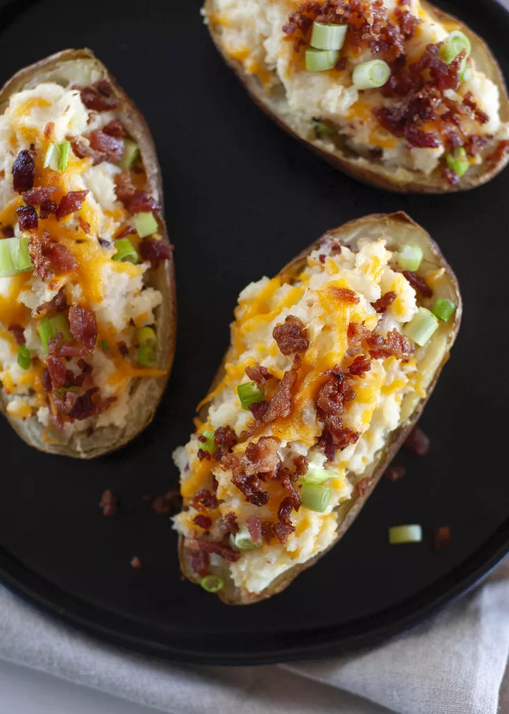

Twice Baked Potatoes

Description
When is the last time you had Twice Baked Potatoes?! Here are two variations on a classic recipe: one with a cheddar cheese and bacon, the other with a blue cheese and chives. These are such a good side dish to a holiday meal or Sunday supper.
Ingredients
4 large russet potatoes, about 1 pound each
Extra virgin olive oil
1/2 cup sour cream
1/2 cup milk
2 tablespoons butter, softened
1 tablespoon cream
Stuffing
1 cup grated cheddar cheese
4 Strips bacon
1/4 cup chopped green onion
Directions
- Bake the potatoes:
Preheat the oven to 400°F. Scrub the potatoes clean under running water. Poke each potato in several places with the tines of a fork so that when the potatoes are cooking they don't explode.
Rub the potatoes all over with a little olive oil. Place directly on the middle or top rack of the oven.
Cook for 1 hour and 15 minutes, or until the potatoes are cooked through. They should give a little when pressed.
If short on time you can bake the potatoes in the microwave, 10 minutes on high heat for 2 potatoes, 15 minutes for 4 potatoes. The skins of microwave baked potatoes aren't nearly as crispy, so you may want to rub a little olive oil on them and finish them in a conventional oven at 400°F for 10 minutes.
- Cook the bacon if using:
If you are including bacon as one of your mix-ins, while the potatoes are cooking, cook the bacon strips in a frying pan on medium low heat for 10 to 15 minutes, or until crisp. Drain on paper towels. Let cool. Crumble.
- Make potato "boats":
Allow the potatoes to cool to touch. Slice the top third lengthwise off the potato.
Use a spoon to scoop out the insides, forming a potato "canoe", leaving about 1/4 inch of potato on the skin.
Alternatively, you can slice the potatoes in half, lengthwise. In this case you may want to bake an extra potato so that you will have more potato filling to mound into the potato boats.
- Mash potato insides with sour cream, milk, butter:
Place the scooped out potato insides, sour cream, milk, cream, and butter into a large bowl.
Mash with a potato masher. If you want a creamy texture, beat with an electric beater until desired consistency. Do not over-beat the potatoes! They can turn glue-y if you do.
- Stuff potato shells with filling:
Mix in the extras with the potato filling. Reserve some of the extras to sprinkle on the tops of the potatoes. Spoon fillings into the potato shells. Sprinkle with extra toppings.
-
Bake:
Reduce the oven temperature to 350°F. Place potatoes on a roasting pan or baking sheet and bake 15 to 20 minutes until heated through.
Homepage